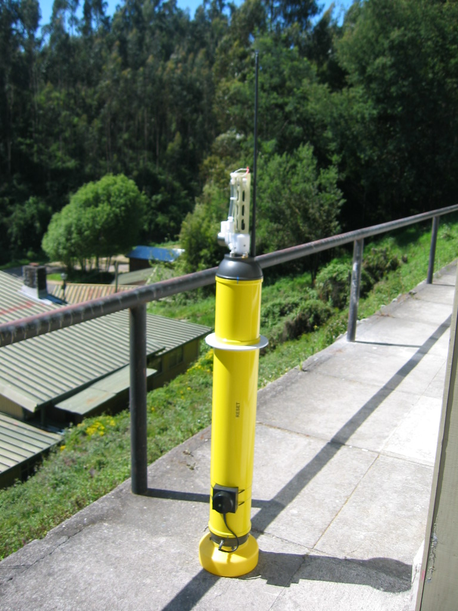

| Argo Floats |
The Argo floats are sampling equipments that allow marine scientists to obtain oceanographic data such as Temperature, Salinity and Oxygen in near real time. These instruments offer the possibility to measure remotely the environmental properties of the water column. They are completely autonomous and no maintenance is required. They move vertically modifying their buoyancy: in other words, they become more or less dense that the surrounding water. Every 5 days, data is transmitted to a satellite and later received and processed by our data management center (see figure below).
This state-of-the-art technology has increased radically the space and time resolution of our observations.
The whole data is contained in 18 messages which are transmitted redundantly in order to ensure messages free errors at the land centre. Some messages can be not received due to both, weather conditions and satellites that have not coverage over the signal. Each message has a checksum number, CRC that is used to detect errors after transmission. The CRC is calculated and appended before transmission and verified afterwards to confirm that no changes occurred on transit.
A first set of 10 Argo floats deployed in the oxygen minimum zone along 6°S to 24°S, was established initially to cover the area under study. We have included oxygen and fluoresce sensors besides the temperature and conductivity sensors that are normally carried by the floats. We are using the Optode oxygen sensors supplied by Aanderaa Data Instruments which have shown to be reliable to produce a good performance in environments of very low oxygen concentrations. The fluoresce sensor used is the FLNTU supplied by Wetlabs. Our floats are manufactured by Webb Research in USA. This company has built over 2000 of these floats, which are the majority in the international ARGO program.

The model of the float, currently in use for our group, is called Apex (Autonomous Profiler Explorer). They are equipped with these sensors:
- Seabird model 41, Temperature and Salinity
- Aanderaa Optode 3830, Oxygen
- Wetlabs FLNTU, Chlorophyll and Turbidity
Forty standard depths have been selected specially to characterize the OMZ zone. Apex’s were configured to generate a new profile every 5 days and they were timed in order to ensure that a profile is complete before sun rise.